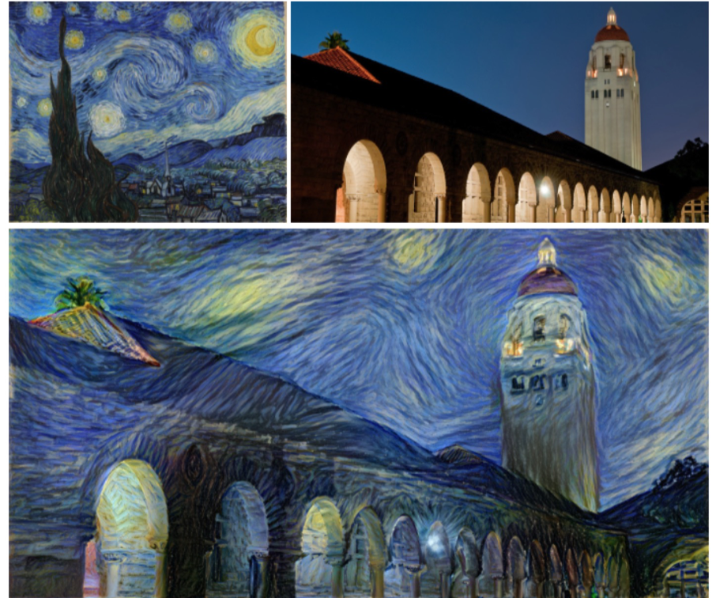
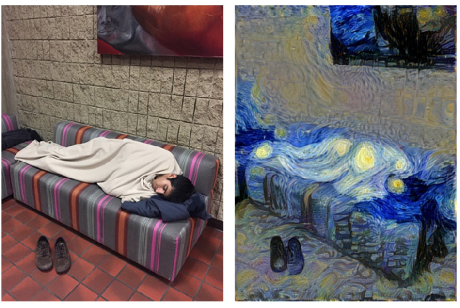

Image style transfer is a topic that receives increasing research and application interests during these years. The term image style transfer, or alternatively image stylization, refers to the image processing task that extracts the feature of style of a set of images, and apply such style onto another set of images.
There has been many implementations of image style transfer. One good example is transferring the style of an oil painting to a photograph, as shown below:
Although this kind of style transfer operation has achieved good performance when the to-be-stylized images are landscape photographs, it sometimes meet limitations when the photographs contain other elements, for example, a photo that contains a portrait. The next figure shows an example of undesired style transfer result:
The original photo is a man laying on a couch, and is transferred into The Starry Night style. However, the man’s figure becomes strange and unobvious after the style transfer. It is hard to tell there is a man laying in the right hide side image, if not given the original photograph. Besides, the face of this man becomes unrecognizable (replaced by a star) after the style transfer.
By noticing this issue, we come up with the idea that developing a better image style transfer method for photograph that contains both portrait and landscape. The implementation consists of two major parts, first we need to extract the portrait out of the photograph, and second, apply different style transfer on portrait and landscape separately, and later combining them together. By choosing suitable parameters, the entire photo should be stylized, with the portrait still being recognizable. The first part of our project idea focus on portrait segmentation, and the second part focus on image stylization.